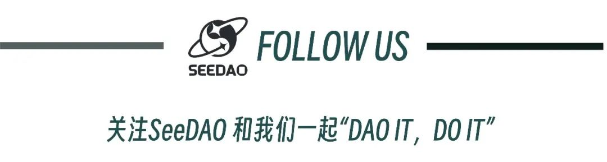

在Web3的世界里，
为什么我们仍旧渴望一场场线下活动？
We are all connected; to each other, biologically. To the Earth, chemically. To the rest of the universe, atomically.
Neil deGrasse Tyson
"我们都相互关联；在生物上与彼此关联，在化学上与地球关联，在原子上与整个宇宙关联。”
美国天文学家 尼尔·德格拉斯·泰森
数字化时代，每个人都能跨越时间和空间，可以跟许多人分享、交流，可以跟全世界say hi，Web3的兴起进一步加强了全球范围内的虚拟连接，我们好像在网络上拥有了一片领地、甚至一个国家。
然而，在这样的世界中，线下的意义又是什么呢？真正的人际关系和身临其境的互动体验永远是无法完全替代的。
作为社交动物，即使现在一台手机已经能完成大部分事务，但我们仍本能需求着，通过身体语言和情感共鸣建立的更深入、更真实联系。
当我们更贴近现实世界中的人与事物，实体交互能够激发我们的创造力、启发我们的思考；
当我们在一个场所共同体验、共同经历一个事物，与其他人分享我们的热情，更立体地感受所有人的在场，一张更紧密的人际网络就此建立。
SeeDAO致力于成为一座连接 100 万 Web3 游民的数字城邦，我们利用网络搭建、排布节点，也坚信线下的重要性和价值。如果你想产生一些价值连接，仍然期待在线下的惊喜，我们衷心邀请各位发起、共同创造充满集聚与共融的See U IRL。
See U IRL，See U In Real Life。
第一期城市联络人已启动
目前第一期城市联络人活动已正式启动，通过全球分布的线下活动，实现SeeDAO成员、数字游民、探索者的连接。
根据全球不同城市的属性和禀赋，我们设置了两类活动，方便伙伴们申请、参与：
Key City：全球政治经济重点城市，设置城市联络人，该城市活动主要由任期内的城市联络人发起
Lite City：不限城市，只要符合SeeDAO P1提案，就可以申请发起
那么，在See U IRL会发生些什么？
见到丰富多元参与者：基于当地城市展开，盛邀全球领袖、专家学者和行业精英，这里既是汇聚各界人士的平台，也是跨领域交流和合作的迸发点。
看见甚至展示创新、潜力项目的机会：不止是社交和轻型沙龙，See U IRL还会根据主题设置圆桌讨论和交流环节，获得宝贵的见解和启发，并与业界领先者进行互动。
支持活动发起者们：SeeDAO鼓励每个人都能发起线下活动，并提供项目上的支持。无论是小型讨论会，还是创新沙龙，项目组都会跟伙伴们共同实现。
现在就开始，Lite City！
线下活动的重要性和价值无法被取代，它们通过深入的情感连接和实践体验提供了独特的机会，让人与人之间的联系更加牢固，也让每一次握手、微笑变得有意义。
Lite City开放给所有SeeDAO成员申请，如果你也想举办一次线下活动，如果你也想将自己的想法成真，如果你也想为自己的创造有价值的回忆，那么发起一场See U IRL的线下活动吧！
集聚、共融、创造力、未来……人与人的链接在这里加深、变换。
哪些活动可能在Lite City发生？
Topic events - 你可以邀请嘉宾共同就特定主题进行讨论，无论是圆桌还是开放麦，相信都会有不同的收获
Social events - 你可以设计更具趣味的社交轻型沙龙活动，让更多伙伴在场域内结交到志同道合的好友
......
你可以在这里深入了解See U IRL活动:
https://seedao.notion.site/See-U-IRL-1c99b79c573b4835908c5874a54a5846
我太期待了！怎样开始申请？
如果你是SeeDAO L1及以上成员，你可以：
开始申请：直接查看并填写申请表单，了解See U IRL的整体情况后，能更好地策划整体活动；
一起筹备：在活动以P1提案提交后，你会被拉入一个global协作群，群内有项目组的伙伴来帮助你落地和宣传活动；
复盘整合：活动落地后，项目组会发放SBT和积分奖励，你也会收获更多好友、活动筹办经验
详情可以点击这里查看：
https://seedao.notion.site/See-U-IRL-SOP-40340d67dd8046a680aca7d212c217fa
如果你还不是SeeDAO成员，欢迎你以参与者身份参与活动，同时加入新手营成为L1成员
VX：seedao2023
排版：刀刀
审核：Ines
